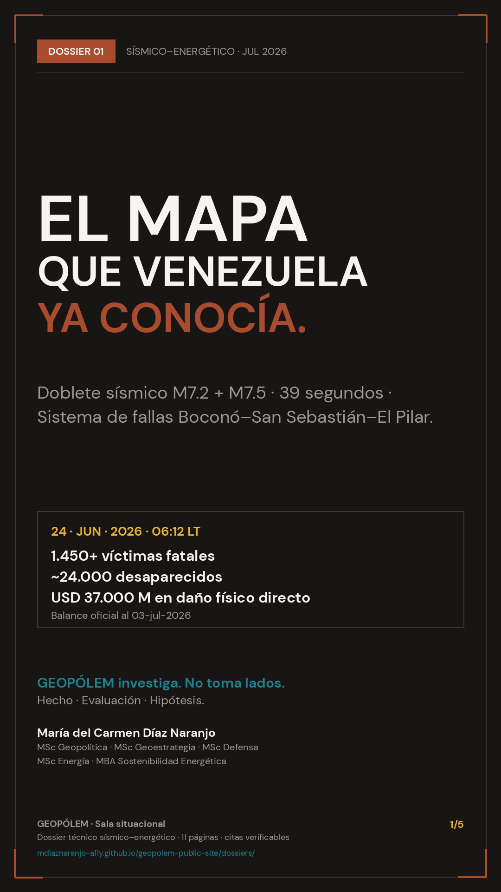
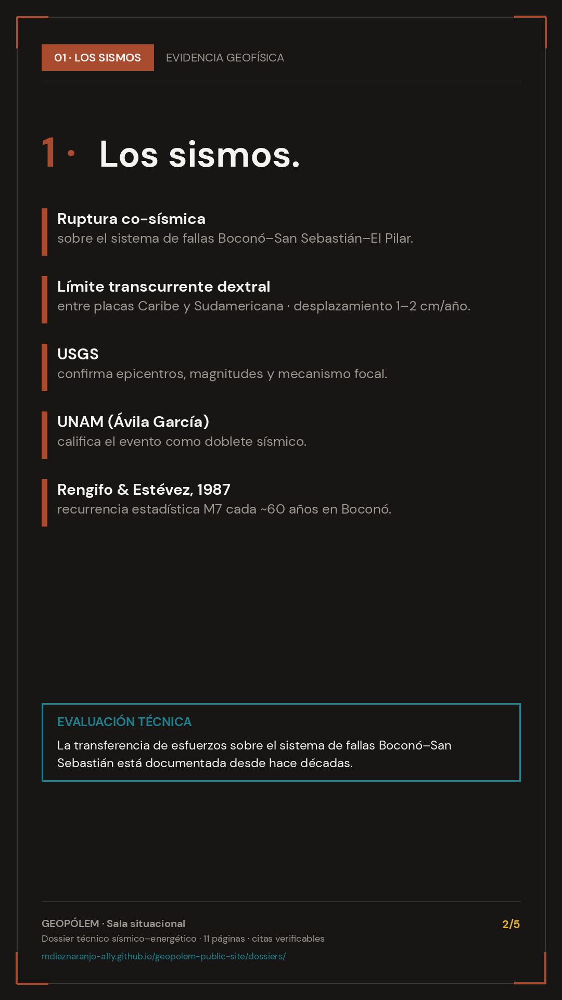
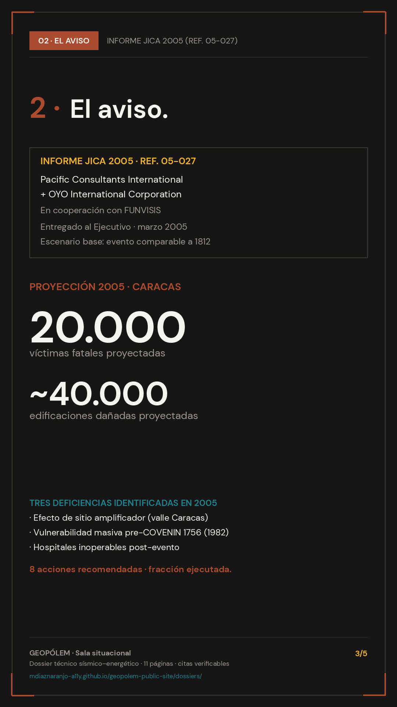
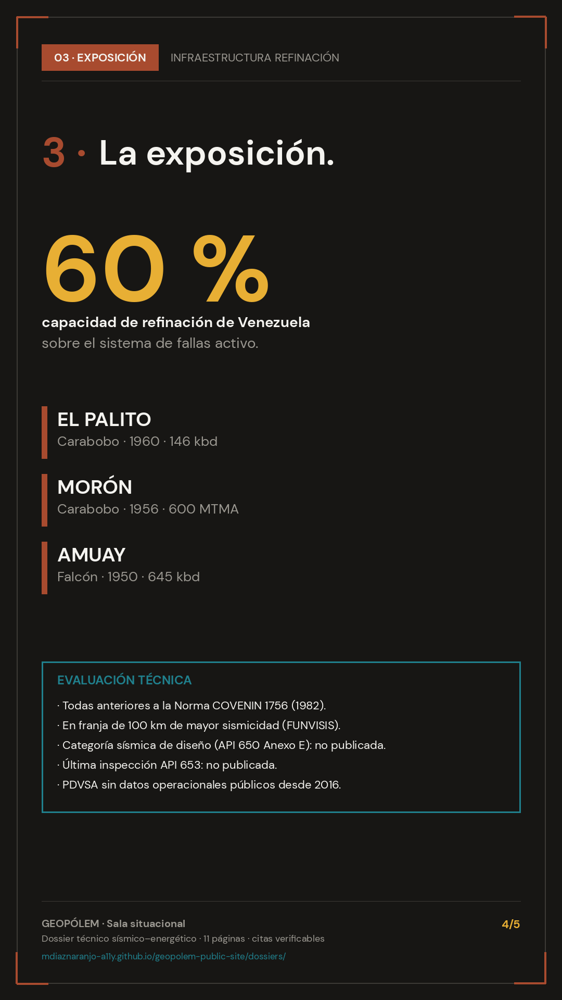
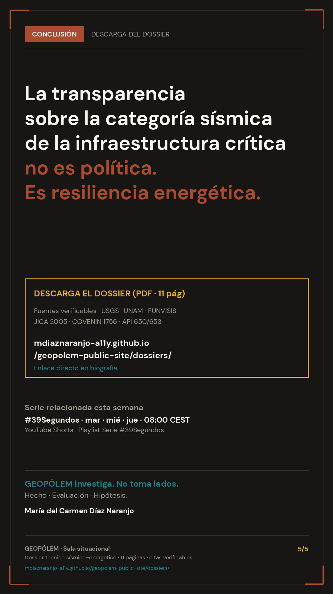

Energía · Sismos · Venezuela
Doblete sísmico Venezuela 24-jun-2026
JICA 2005 y refinerías del arco costero
Consolidación técnica del doblete sísmico M7.2 + M7.5 del 24 de junio de 2026, revisión del informe JICA 2005 y análisis de exposición sísmica de El Palito, Morón y Amuay. 11 páginas · 28 fuentes citadas.
M7.2 + M7.5
JICA 2005
Boconó–San Sebastián
Refinerías
Publicado
7 · JUL · 2026
Autora
M. Díaz Naranjo
Vista rápida · 5 láminas resumen

01 · Portada

02 · Sismos

03 · JICA 2005

04 · Energía

05 · Cierre
Toca una lámina para abrir en alta resolución (1080×1920).